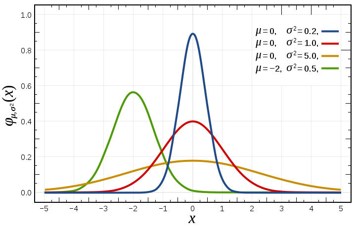

Machine Learning(9): Anomaly Detection AND Recommender System
-
ML:Anomaly Detection
- Problem Motivation
- Gaussian Distribution
- Algorithm
- Developing and Evaluating an Anomaly Detection System
- Anomaly Detection vs. Supervised Learning
- Choosing What Features to Use
- Multivariate Gaussian Distribution
- Anomaly Detection using the Multivariate Gaussian Distribution
- ML:Recommender Systems
- Problem Formulation
- Content Based Recommendations
- Collaborative Filtering
- Collaborative Filtering Algorithm
- Vectorization: Low Rank Matrix Factorization
- Implementation Detail: Mean Normalization
ML:Anomaly Detection
Problem Motivation
Just like in other learning problems, we are given a dataset \({x^{(1)}, x^{(2)},\dots,x^{(m)}}\).
We are then given a new example, \(x_{test}\), and we want to know whether this new example is abnormal/anomalous.
We define a "model" p(x) that tells us the probability the example is not anomalous. We also use a threshold ϵ (epsilon) as a dividing line so we can say which examples are anomalous and which are not.
A very common application of anomaly detection is detecting fraud:
\(x^{(i)} =\) features of user i's activities
Model p(x) from the data.
Identify unusual users by checking which have p(x)<ϵ.
If our anomaly detector is flagging too many anomalous examples, then we need to decrease our threshold ϵ
Gaussian Distribution
The Gaussian Distribution is a familiar bell-shaped curve that can be described by a function \(\mathcal{N}(\mu,\sigma^2)\)
Let x∈ℝ. If the probability distribution of x is Gaussian with mean μ, variance \(\sigma^2\), then:
\(x \sim \mathcal{N}(\mu, \sigma^2)\)
The little ∼ or 'tilde' can be read as "distributed as."
The Gaussian Distribution is parameterized by a mean and a variance.
Mu, or μ, describes the center of the curve, called the mean. The width of the curve is described by sigma, or σ, called the standard deviation.
The full function is as follows:
\(\large p(x;\mu,\sigma^2) = \dfrac{1}{\sigma\sqrt{(2\pi)}}e^{-\dfrac{1}{2}(\dfrac{x - \mu}{\sigma})^2}\)
We can estimate the parameter μ from a given dataset by simply taking the average of all the examples:
\(\mu = \dfrac{1}{m}\displaystyle \sum_{i=1}^m x^{(i)}\)
We can estimate the other parameter, \(\sigma^2\), with our familiar squared error formula:
\(\sigma^2 = \dfrac{1}{m}\displaystyle \sum_{i=1}^m(x^{(i)} - \mu)^2\)

Algorithm
Given a training set of examples, \(\lbrace x^{(1)},\dots,x^{(m)}\rbrace\) where each example is a vector, \(x \in \mathbb{R}^n\).
\(p(x) = p(x_1;\mu_1,\sigma_1^2)p(x_2;\mu_2,\sigma^2_2)\cdots p(x_n;\mu_n,\sigma^2_n)\)
In statistics, this is called an "independence assumption" on the values of the features inside training example x.
More compactly, the above expression can be written as follows:
\(= \displaystyle \prod^n_{j=1} p(x_j;\mu_j,\sigma_j^2)\)
The algorithm
Choose features \(x_i\) that you think might be indicative of anomalous examples.
Fit parameters \(\mu_1,\dots,\mu_n,\sigma_1^2,\dots,\sigma_n^2\)
Calculate \(\mu_j = \dfrac{1}{m}\displaystyle \sum_{i=1}^m x_j^{(i)}\)
Calculate \(\sigma^2_j = \dfrac{1}{m}\displaystyle \sum_{i=1}^m(x_j^{(i)} - \mu_j)^2\)
Given a new example x, compute p(x):
\(p(x) = \displaystyle \prod^n_{j=1} p(x_j;\mu_j,\sigma_j^2) = \prod\limits^n_{j=1} \dfrac{1}{\sqrt{2\pi}\sigma_j}exp(-\dfrac{(x_j - \mu_j)^2}{2\sigma^2_j})\)
Anomaly if p(x)<ϵ
A vectorized version of the calculation for μ is \(\mu = \dfrac{1}{m}\displaystyle \sum_{i=1}^m x^{(i)}\). You can vectorize \(\sigma^2\) similarly.
Developing and Evaluating an Anomaly Detection System
To evaluate our learning algorithm, we take some labeled data, categorized into anomalous and non-anomalous examples ( y = 0 if normal, y = 1 if anomalous).
Among that data, take a large proportion of good , non-anomalous data for the training set on which to train p(x).
Then, take a smaller proportion of mixed anomalous and non-anomalous examples (you will usually have many more non-anomalous examples) for your cross-validation and test sets.
For example, we may have a set where 0.2% of the data is anomalous. We take 60% of those examples, all of which are good (y=0) for the training set. We then take 20% of the examples for the cross-validation set (with 0.1% of the anomalous examples) and another 20% from the test set (with another 0.1% of the anomalous).
In other words, we split the data 60/20/20 training/CV/test and then split the anomalous examples 50/50 between the CV and test sets.
Algorithm evaluation:
Fit model p(x) on training set \(\lbrace x^{(1)},\dots,x^{(m)} \rbrace\)
On a cross validation/test example x, predict:
If p(x) < ϵ ( anomaly ), then y=1
If p(x) ≥ ϵ ( normal ), then y=0
Possible evaluation metrics (see "Machine Learning System Design" section):
True positive, false positive, false negative, true negative.
Precision/recall
\(F_1\) score
Note that we use the cross-validation set to choose parameter ϵ
Anomaly Detection vs. Supervised Learning
When do we use anomaly detection and when do we use supervised learning?
Use anomaly detection when...
We have a very small number of positive examples (y=1 ... 0-20 examples is common) and a large number of negative (y=0) examples.
We have many different "types" of anomalies and it is hard for any algorithm to learn from positive examples what the anomalies look like; future anomalies may look nothing like any of the anomalous examples we've seen so far.
Use supervised learning when...
We have a large number of both positive and negative examples. In other words, the training set is more evenly divided into classes.
We have enough positive examples for the algorithm to get a sense of what new positives examples look like. The future positive examples are likely similar to the ones in the training set.
Choosing What Features to Use
The features will greatly affect how well your anomaly detection algorithm works.
We can check that our features are gaussian by plotting a histogram of our data and checking for the bell-shaped curve.
Some transforms we can try on an example feature x that does not have the bell-shaped curve are:
log(x)
log(x+1)
log(x+c) for some constant
\(\sqrt{x}\)
\(x^{1/3}\)
We can play with each of these to try and achieve the gaussian shape in our data.
There is an error analysis procedure for anomaly detection that is very similar to the one in supervised learning.
Our goal is for p(x) to be large for normal examples and small for anomalous examples.
One common problem is when p(x) is similar for both types of examples. In this case, you need to examine the anomalous examples that are giving high probability in detail and try to figure out new features that will better distinguish the data.
In general, choose features that might take on unusually large or small values in the event of an anomaly.
Multivariate Gaussian Distribution
The multivariate gaussian distribution is an extension of anomaly detection and may (or may not) catch more anomalies.
Instead of modeling \(p(x_1),p(x_2),\dots\) separately, we will model p(x) all in one go. Our parameters will be: \(\mu \in \mathbb{R}^n\) and \(\Sigma \in \mathbb{R}^{n \times n}\)
\(p(x;\mu,\Sigma) = \dfrac{1}{(2\pi)^{n/2} |\Sigma|^{1/2}} exp(-1/2(x-\mu)^T\Sigma^{-1}(x-\mu))\)
The important effect is that we can model oblong gaussian contours, allowing us to better fit data that might not fit into the normal circular contours.
Varying Σ changes the shape, width, and orientation of the contours. Changing μ will move the center of the distribution.
Check also:
- The Multivariate Gaussian Distribution http://cs229.stanford.edu/section/gaussians.pdf Chuong B. Do, October 10, 2008.
Following examples illustrate the basic meaning of parameters in multivariable gaussian distribution:
mean = [0, 0]
cov = [[1, 0], [0, 1]] # diagonal covariance
# Draw random samples from a multivariate normal distribution
x, y = np.random.multivariate_normal(mean, cov, 5000).T
plt.plot(x, y, 'x',color='y')
plt.axis('equal')
plt.hold
# change mean
mean = [0, 10]
x, y = np.random.multivariate_normal(mean, cov, 5000).T
plt.plot(x, y, '.', color='b')
# change variances
mean = [10, 10]
cov = [[1, 0], [0, 10]] # diagonal covariance
x, y = np.random.multivariate_normal(mean, cov, 5000).T
plt.plot(x, y, '-', color='r')
plt.show()

Anomaly Detection using the Multivariate Gaussian Distribution
When doing anomaly detection with multivariate gaussian distribution, we compute μ and Σ normally. We then compute p(x) using the new formula in the previous section and flag an anomaly if p(x) < ϵ.
The original model for p(x) corresponds to a multivariate Gaussian where the contours of \(p(x;\mu,\Sigma)\) are axis-aligned.
The multivariate Gaussian model can automatically capture correlations between different features of x.
However, the original model maintains some advantages: it is computationally cheaper (no matrix to invert, which is costly for large number of features) and it performs well even with small training set size (in multivariate Gaussian model, it should be greater than the number of features for Σ to be invertible).
ML:Recommender Systems
Problem Formulation
Recommendation is currently a very popular application of machine learning.
Say we are trying to recommend movies to customers. We can use the following definitions
\(n_u =\) number of users
\(n_m =\) number of movies
\(r(i,j) = 1\) if user j has rated movie i
\(y(i,j) =\) rating given by user j to movie i (defined only if r(i,j)=1)
Content Based Recommendations
We can introduce two features, \(x_1\) and \(x_2\) which represents how much romance or how much action a movie may have (on a scale of 0−1).
One approach is that we could do linear regression for every single user. For each user j, learn a parameter \(\theta^{(j)} \in \mathbb{R}^3\). Predict user j as rating movie i with \((\theta^{(j)})^Tx^{(i)}\) stars.
\(\theta^{(j)} =\) parameter vector for user j
\(x^{(i)} =\) feature vector for movie i
For user j, movie i, predicted rating: \((\theta^{(j)})^T(x^{(i)})\)
- \(m^{(j)} =\) number of movies rated by user j
To learn \(\theta^{(j)}\), we do the following
\(min_{\theta^{(j)}} = \dfrac{1}{2}\displaystyle \sum_{i:r(i,j)=1} ((\theta^{(j)})^T(x^{(i)}) - y^{(i,j)})^2 + \dfrac{\lambda}{2} \sum_{k=1}^n(\theta_k^{(j)})^2\)
This is our familiar linear regression. The base of the first summation is choosing all i such that \(r(i,j) = 1\).
To get the parameters for all our users, we do the following:
\(min_{\theta^{(1)},\dots,\theta^{(n_u)}} = \dfrac{1}{2}\displaystyle \sum_{j=1}^{n_u} \sum_{i:r(i,j)=1} ((\theta^{(j)})^T(x^{(i)}) - y^{(i,j)})^2 + \dfrac{\lambda}{2} \sum_{j=1}^{n_u} \sum_{k=1}^n(\theta_k^{(j)})^2\)
We can apply our linear regression gradient descent update using the above cost function.
The only real difference is that we eliminate the constant \(\dfrac{1}{m}\).
Collaborative Filtering
It can be very difficult to find features such as "amount of romance" or "amount of action" in a movie. To figure this out, we can use feature finders .
We can let the users tell us how much they like the different genres, providing their parameter vector immediately for us.
To infer the features from given parameters, we use the squared error function with regularization over all the users:
\(min_{x^{(1)},\dots,x^{(n_m)}} \dfrac{1}{2} \displaystyle \sum_{i=1}^{n_m} \sum_{j:r(i,j)=1} ((\theta^{(j)})^T x^{(i)} - y^{(i,j)})^2 + \dfrac{\lambda}{2}\sum_{i=1}^{n_m} \sum_{k=1}^{n} (x_k^{(i)})^2\)
You can also randomly guess the values for theta to guess the features repeatedly. You will actually converge to a good set of features.
Collaborative Filtering Algorithm
To speed things up, we can simultaneously minimize our features and our parameters:
\(J(x,\theta) = \dfrac{1}{2} \displaystyle \sum_{(i,j):r(i,j)=1}((\theta^{(j)})^Tx^{(i)} - y^{(i,j)})^2 + \dfrac{\lambda}{2}\sum_{i=1}^{n_m} \sum_{k=1}^{n} (x_k^{(i)})^2 + \dfrac{\lambda}{2}\sum_{j=1}^{n_u} \sum_{k=1}^{n} (\theta_k^{(j)})^2\)
It looks very complicated, but we've only combined the cost function for theta and the cost function for x.
Because the algorithm can learn them itself, the bias units where x0=1 have been removed, therefore x∈ℝn and θ∈ℝn.
These are the steps in the algorithm:
Initialize \(x^{(i)},...,x^{(n_m)},\theta^{(1)},...,\theta^{(n_u)}\) to small random values. This serves to break symmetry and ensures that the algorithm learns features \(x^{(i)},...,x^{(n_m)}\) that are different from each other.
Minimize \(J(x^{(i)},...,x^{(n_m)},\theta^{(1)},...,\theta^{(n_u)})\) using gradient descent (or an advanced optimization algorithm).E.g. for every \(j=1,...,n_u,i=1,...n_m\):\(x_k^{(i)} := x_k^{(i)} - \alpha\left (\displaystyle \sum_{j:r(i,j)=1}{((\theta^{(j)})^T x^{(i)} - y^{(i,j)}) \theta_k^{(j)}} + \lambda x_k^{(i)} \right)\)\(\theta_k^{(j)} := \theta_k^{(j)} - \alpha\left (\displaystyle \sum_{i:r(i,j)=1}{((\theta^{(j)})^T x^{(i)} - y^{(i,j)}) x_k^{(i)}} + \lambda \theta_k^{(j)} \right)\)
For a user with parameters θ and a movie with (learned) features x, predict a star rating of \(\theta^Tx\).
Vectorization: Low Rank Matrix Factorization
Given matrices X (each row containing features of a particular movie) and Θ (each row containing the weights for those features for a given user), then the full matrix Y of all predicted ratings of all movies by all users is given simply by: \(Y = X\Theta^T\).
Predicting how similar two movies i and j are can be done using the distance between their respective feature vectors x. Specifically, we are looking for a small value of \(||x^{(i)} - x^{(j)}||\).
Implementation Detail: Mean Normalization
If the ranking system for movies is used from the previous lectures, then new users (who have watched no movies), will be assigned new movies incorrectly. Specifically, they will be assigned θ with all components equal to zero due to the minimization of the regularization term. That is, we assume that the new user will rank all movies 0, which does not seem intuitively correct.
We rectify this problem by normalizing the data relative to the mean. First, we use a matrix Y to store the data from previous ratings, where the ith row of Y is the ratings for the ith movie and the jth column corresponds to the ratings for the jth user.
We can now define a vector
\(\mu = [\mu_1, \mu_2, \dots , \mu_{n_m}]\)
such that
\(\mu_i = \frac{\sum_{j:r(i,j)=1}{Y_{i,j}}}{\sum_{j}{r(i,j)}}\)
Which is effectively the mean of the previous ratings for the ith movie (where only movies that have been watched by users are counted). We now can normalize the data by subtracting u, the mean rating, from the actual ratings for each user (column in matrix Y):
As an example, consider the following matrix Y and mean ratings μ:
\(Y = \begin{bmatrix} 5 & 5 & 0 & 0 \newline 4 & ? & ? & 0 \newline 0 & 0 & 5 & 4 \newline 0 & 0 & 5 & 0 \newline \end{bmatrix}, \quad \mu = \begin{bmatrix} 2.5 \newline 2 \newline 2.25 \newline 1.25 \newline \end{bmatrix}\)
The resulting Y′ vector is:
\(Y' = \begin{bmatrix} 2.5 & 2.5 & -2.5 & -2.5 \newline 2 & ? & ? & -2 \newline -.2.25 & -2.25 & 3.75 & 1.25 \newline -1.25 & -1.25 & 3.75 & -1.25 \end{bmatrix}\)
Now we must slightly modify the linear regression prediction to include the mean normalization term:
\((\theta^{(j)})^T x^{(i)} + \mu_i\)
Now, for a new user, the initial predicted values will be equal to the μ term instead of simply being initialized to zero, which is more accurate.
Python `virtualenv` on mac
Install
Install virtualenv using conda instead of pip, because it might raise error (see on StackOverflow)
conda install virtualenv
create your environment
Now you can create your python environment for your particular programs. For example, under the folder your project, you create an environment called .venv by:
virtualenv --no-site-packages .venv
The command --no-site-packages requires the environment should not access to global site-packages (as default now).
Before running your program in your created environment, you need to activate it:
source .venv/bin/activate
And remember to deactivate it whenever you are done.:
deactivate
Convolutional Neural Networks
Architecture
Three main types of layers to build ConvNet architectures: Convolutional Layer, Pooling Layer and Fully-Connected Layer.
The layers of a ConvNet have neurons arranged in 3 dimensions: width, height, depth.

A simple ConvNet for CIFAR-10 classification could have the architecture as follows:
- INPUT [width x height x color channel] will hold the raw pixel values of the image, in this case an image of width, height, and with three color channels R,G,B.
- CONV layer will compute the output of neurons that are connected to local regions in the input, each computing a dot product between their weights and a small region they are connected to in the input volume.
- RELU layer will apply an elementwise activation function, such as the
max(0,x)thresholding at zero. - POOL layer will perform a downsampling operation along the spatial dimensions (width, height).
- FC (i.e. fully-connected) layer will compute the class scores, where each score corresponding to the 10 categories of CIFAR-10. As with ordinary Neural Networks and as the name implies, each neuron in this layer will be connected to all the numbers in the previous volume.
Conv layers
Four hyperparameters depth(K), spatial extent(\(F\)), stride(\(S\)) and zero-padding(\(P\)) control the size of the output volume from the input volume (\(W\)).
Summary. To summarize, the Conv Layer:
- Accepts a volume of size \(W_1 \times H_1 \times D_1\)
- Requires four hyperparameters:
- Number of filters \(K\),
- their spatial extent \(F\),
- the stride \(S\),
- the amount of zero padding \(P\).
- Produces a volume of size \(W_2 \times H_2 \times D_2\) where:
- \(W_2 = (W_1 - F + 2P)/S + 1\)
- \(H_2 = (H_1 - F + 2P)/S + 1\) (i.e. width and height are computed equally by symmetry)
- \(D_2 = K\)
- With parameter sharing, it introduces \(F \cdot F \cdot D_1\) weights per filter, for a total of \((F \cdot F \cdot D_1) \cdot K\) weights and \(K\) biases.
- In the output volume, the \(d\)-th depth slice (of size \(W_2 \times H_2\)) is the result of performing a valid convolution of the \(d\)-th filter over the input volume with a stride of \(S\), and then offset by \(d\)-th bias.
parameter sharing: the neurons in each depth slice(i.e \(K\)) to use the same weights and bias.
Pooling
max pooling is the most common function performed on the pooling units, others like average pooling or L2-norm pooling is work worse in practice. And Many people dislike the pooling operation and think that we can get away without it.
Fully-connected layers
Neurons in a fully connected layer have full connections to all activations in the previous layer.
Layer Patterns
The most common form of a ConvNet architecture stacks a few CONV-RELU layers, follows them with POOL layers, and repeats this pattern until the image has been merged spatially to a small size. At some point, it is common to transition to fully-connected layers. The last fully-connected layer holds the output, such as the class scores. In other words, the most common ConvNet architecture follows the pattern:
\[INPUT \rightarrow [[CONV \rightarrow RELU]*N \rightarrow POOL?]*M \rightarrow [FC -> RELU]*K \rightarrow FC\]
where the * indicates repetition, and the POOL? indicates an optional pooling layer. Moreover, N >= 0 (and usually N <= 3), M >= 0, K >= 0 (and usually K < 3). For example, here are some common ConvNet architectures you may see that follow this pattern:
Note: INPUT -> FC, implements a linear classifier. Here N = M = K = 0.
Note: Prefer a stack of small filter CONV to one large receptive field CONV layer, because of few parameters needed and expressing more powerful features of the input.
Layer Sizing Patterns
- input layer: Common numbers include 32 (e.g. CIFAR-10), 64, 96 (e.g. STL-10), or 224 (e.g. common ImageNet ConvNets), 384, and 512.
- conv layers: small filters(\(3\times3\) or \(5\times5\)), with \(S=1\). Crucially, padding the input volume with zeros in such way that the conv layer does not alter the spatial dimensions of the input.
- pool layers: use max-pooling with \(F=2, S=2\) or \(F=3, S=2\)
Computational Considerations
The memory bottleneck is the largest bottleneck when constructing ConvNet architectures.

Copyright © 2015 Powered by MWeb, Theme used GitHub CSS.